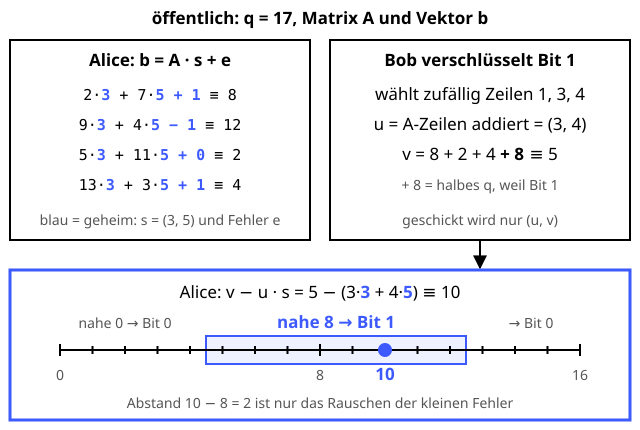

Gitterkryptografie: Learning With Errors
Eine Prise Salz zu viel – und niemand kann das Rezept mehr nachrechnen.
Definition
Learning With Errors (LWE, Oded Regev, 2005) ist das Grundrezept der meisten Post-Quanten-Verfahren. Ein lineares Gleichungssystem zu lösen ist leicht. Addiert man aber zu jedem Ergebnis einen kleinen zufälligen Fehler, wird das Finden der Lösung extrem schwer – nach heutigem Wissen auch für Quantencomputer. Geometrisch entspricht das der Suche nach dem nächsten Punkt in einem Gitter mit Hunderten Dimensionen. Auf LWE bauen ML-KEM und ML-DSA auf.
Zutaten
- Ein Modulus q (öffentlich)
- Eine zufällige Matrix A (öffentlich)
- Ein geheimer Vektor s
- Ein Fehlervektor e mit kleinen Werten wie −1, 0, 1 (geheim)
- Eine Nachricht: ein Bit
Zubereitung
- Alice berechnet b = A · s + e mod q. Öffentlicher Schlüssel ist (A, b), geheim bleibt s.
- Bob wählt zufällig einige Zeilen aus.
- Er addiert die gewählten Zeilen von A zu u und die passenden Einträge von b zu v.
- Für Bit 1 addiert er zusätzlich q/2 (abgerundet) auf v, für Bit 0 nichts. Er schickt (u, v).
- Alice rechnet v − u · s mod q. Übrig bleiben nur die kleinen Fehler – plus q/2, falls Bit 1.
- Liegt das Ergebnis nahe bei 0 (oder knapp unter q), war es Bit 0, liegt es nahe bei q/2, war es Bit 1.
Skizze

Mit dem geheimen s bleibt nach dem Entschlüsseln nur das Rauschen übrig. Ohne s sieht b aus wie Zufall.
Skizze erstellt von Claude (KI)
Demo
Platzhalter für die Demo
Tipps
- Ohne den Fehler e wäre es ein gewöhnliches Gleichungssystem, das man mit dem Gauß-Verfahren in Sekunden löst. Erst das „Rauschen“ macht es schwer.
- Die Fehler dürfen sich nicht zu stark aufsummieren, sonst kippt das Bit beim Entschlüsseln. Echte Verfahren wählen die Parameter so, dass das praktisch nie passiert.
- Die Skizze rechnet mit 2 Dimensionen – echte Verfahren mit Hunderten. ML-KEM nutzt Polynome mit 256 Koeffizienten und q = 3329 („Module-LWE“).
- Der Shor-Algorithmus, der RSA und Diffie-Hellman bricht, hilft hier nicht: Für Gitterprobleme ist kein effizienter Quantenalgorithmus bekannt.
- Gitter können noch mehr: Auch vollhomomorphe Verschlüsselung, mit der man auf verschlüsselten Daten rechnen kann, basiert auf LWE.